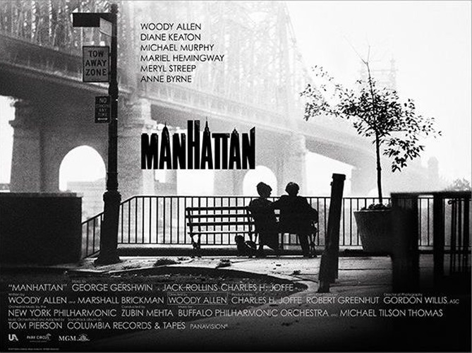
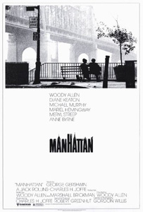
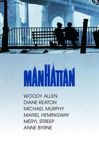
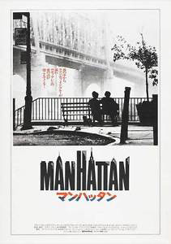
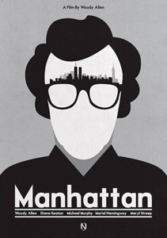
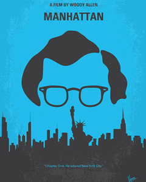
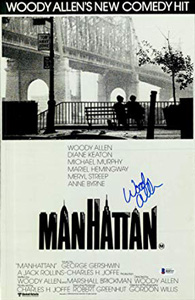

Allen co-stars as a twice-divorced 42-year-old comedy writer who dates a 17-year-old girl Tracy (Mariel Hemingway) but falls in love with his best friend's (Michael Murphy) mistress Mary (Diane Keaton). Also, his lesbian ex-wife Jill (Meryl Streep) is writing a tell-all book about their relationship. Over the course of the movie, Isaac tries to figure out with whom he ultimately wants to be: Tracy or Mary.
Allen talked to cinematographer Gordon Willis about how fun it would be to shoot the film in black and white, Panavision aspect ratio (2.35:1) because it would give "a great look at New York City, which is sort of one of the characters in the film". Allen decided to shoot his film in black and white because that's how he remembers it from when he was small. "Maybe it's a reminiscence from old photographs, films, books and all that. But that's how I remember New York." He always heard Gershwin music with it, too. In Manhattan he and Gordon Willis felt they succeeded in showing the city. "When seeing it there on that big screen, it's really decadent".
Manhattan started what was going to become a frequent theme in Woody Allen movies: infidelity, paving the way for Hannah and Her Sisters, Crimes and Misdemeanors and Husbands and Wives. Unlike his later movies, this one's characters finish the plot on an optimistic note, as opposed to the darker outcomes in later films.
The picture was shot on location with the exception of some of the scenes in the planetarium which were filmed on a set. The film opens at Elaine's, then a famous hot-spot for New York's literati and later Allen brings his "son" to the Russian Tea Rooms.
The scene in which Isaac romances Mary at an art gallery opening was filmed at the Museum of Modern Art.
The famous bridge shot was done at five in the morning. The production had to bring their own bench as there were no park benches at the location. The bridge had two sets of necklace lights on a timer controlled by the city. When the sun came up, the bridge lights went off. Willis made arrangements with the city to leave the lights on and that he would let them know when they got the shot. Afterwards, they could be turned off. As they started to shoot the scene, one string of bridge lights went out, and Allen was forced to use that take.
According to Allen, the idea for Manhattan originated from his love of George Gershwin's music. He was listening to one of the composer's albums of overtures and thought "this would be a beautiful thing to make ... a movie in black and white ... a romantic movie". All titles of the soundtrack were compositions by George Gershwin.
A part of the first movement of Mozart's Symphony No. 40 is heard in a concert scene.
"With Manhattan, a sparkling romance about the overspecialized anxieties of over-intellectualized New Yorkers, Woody Allen has bounced back from the sobriety of Interiors to an exhilarating new comic high." - Gary Arnold : Washington Post
"Allen serves up a nostalgia that was utterly of its time; he incarnates an idea of the city that, even now, remains as strong as its reality and refracts his disappointed ideals into high existential crises." - Richard Brody : New Yorker





